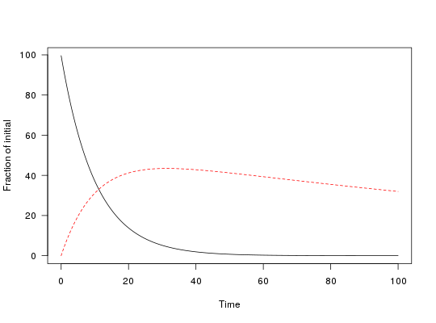

Create a time series of decline data
The time series starts with the amount specified for the first application.
This does not create objects of type ts.
one_box(x, ..., t_end = 100, res = 0.01) # S3 method for numeric one_box(x, ..., t_end = 100, res = 0.01) # S3 method for character one_box(x, parms, ..., t_end = 100, res = 0.01) # S3 method for mkinfit one_box(x, ..., t_end = 100, res = 0.01)
Arguments
- x
- When numeric, this is the half-life to be used for an exponential decline. If x is an mkinfit object, the decline is calculated from this object
- ...
- Further arguments passed to methods
- t_end
- End of the time series
- res
- Resolution of the time series
- parms
- A named numeric vector containing the model parameters
Examples
# Only use a half-life pred_0 <- one_box(10) plot(pred_0)# Use a fitted mkinfit model require(mkin) fit <- mkinfit("FOMC", FOCUS_2006_C, quiet = TRUE) pred_1 <- one_box(fit) plot(pred_1)# Use a model with more than one observed variable m_2 <- mkinmod(parent = mkinsub("SFO", "m1"), m1 = mkinsub("SFO"))#>fit_2 <- mkinfit(m_2, FOCUS_2006_D, quiet = TRUE) pred_2 <- one_box(fit_2) plot(pred_2)